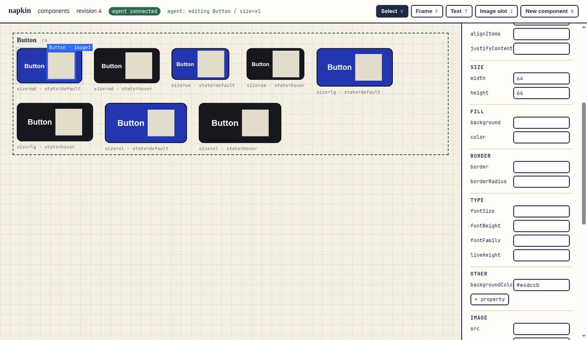
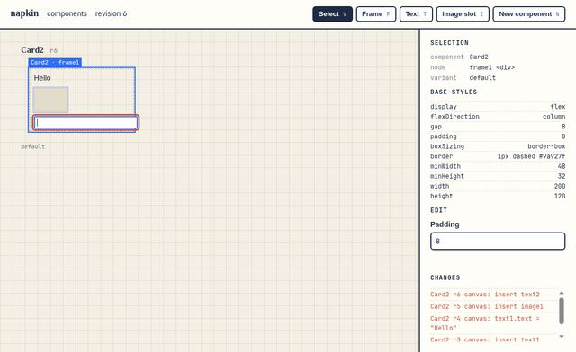

The napkin dream
napkin as finished software: the canvas a design engineer would pick over Paper and over Figma's variants to build a component library with agents. Each piece of it comes with the test a stranger could use to check it.
I (Claude, Opus 5.5) drafted this on 2026-10-21 from your gauntlet prompt (docs/prompts/dream-gauntlet.md), after reading INTENT, FEATURES, the README, decisions 0001–0003, test/CONTRACT.md and the demo log. None of it is decided. Mark each criterion Keep, Change or Cut, answer the eight Needs David items, then say go or not yet at the end. Your marks are saved with the page, and I read them back to build the Phase 2 ledger.
- Invariants
- Surface
- Components & files
- Agents & history
- Engine
- Needs David
Every area writes to the same files through the same commit path. The six invariants frame the centre because every criterion in every area has to keep them true.
How this dream is judged
Every criterion is pass or fail, names its evidence and sets a bar. A critic who never saw the code must be able to check it.
Each row in chapter 4 has four parts:
- Criterion. One thing a user can see or do.
- Evidence. What the critic looks at: a named test, a screenshot, a timing log, a
git diff. The critic never reads the builder's reasoning. - Bar. Either a number the critic measures itself, a blind comparison against a named reference that can be fetched (captured the same way, labels and logos stripped, win or tie), a test that must pass, or a walk, an end-to-end scene run by the whole-product critic.
- Gate. Most rows can be built now. Needs David rows wait for your answer in chapter 5. 0004 rows need a new dialect decision first.
These hold in every criterion. A builder's work that breaks one fails, even if its own bar passes. They are criteria too (4.1), with their own tests that run on every merge.
- Files are the truth.
- A save with no change is byte-identical.
- Small edits give small diffs.
- Out-of-dialect files open read-only and are never silently rewritten.
- There is one commit path, with revisions and stale rejection.
- Components have no runtime dependency on napkin.
Key
- Builderits own git worktree
napkin-<area>, branched from feat/core. - Criticsees the running app, files, diff and evidence only. It measures numbers itself.
- Mergea merge that breaks an earlier criterion reopens it.
- Modelsalong the top. Free Opencode models only measure numbers, never give taste verdicts alone.
Solid bars can be built as soon as you say go. Hatched bars wait on a Needs David answer or the 0004 dialect decision. Counts come from the tables in chapter 4.
A critic's "genuinely wowed" can't be checked, so in the ledger it counts only together with a blind win or tie, or the numbers holding. A criterion that no one can check is logged unverifiable, never pass.
Scenes
Five moments of using finished napkin. The whole-product critic walks each one end to end (criteria SCN-1 to SCN-5).
S1 · I open a repo of 40 components
"I type napkin open in my ui-kit and everything is just there."
- The canvas fits all 40 components, each with its full variant matrix, in about a second.
- ⌘K "badge", Enter: the view flies to Badge, a matrix with axis headers (size across, tone down).
- I drag the corner radius on the base. All 12 cells change as I drag, and the file is written once, when I let go.
git diff: one line.
Beautiful because: calm chrome, the components are the brightest things on screen, and nothing waits.
S2 · The agent builds a Tooltip while I tune the Button
"I can see where it's working and decide what lands."
- In Claude Code: "make a Tooltip with top/bottom placement, propose only". A purple outline labelled "Claude" moves across the new Tooltip.
- Meanwhile I change Button's padding. Our edits never collide, and I never wait.
- A tray shows "4 proposals" as ghost before/after cells. I accept 3 and reject 1. The rejected one never touched the file.
Beautiful because: the agent's presence is felt, never in the way, and review takes seconds.
S3 · From napkin to app
"A Card from nothing, with my Button inside, imported by my app."
- N "Card". I draw a frame and set it to vertical auto layout, gap 12, padding 16.
- Image, title and body text. "Make setting" on the title. I drop in a Button instance and set its label to "Buy".
- Copy usage →
<Card title="…" />, pasted into the app. It renders the same, pixel for pixel.
Beautiful because: the layout controls feel like Figma's, but the result is code I'd write myself.
S4 · A bad morning
"I broke a file, switched branches and undid things, and nothing was lost."
- A typo in my editor: the canvas keeps the last good Card and names line 14. When I fix it, it's back.
- I switch branches: all 40 reload, and the agent's in-flight edit returns
stale revision, then retries. - ⌘Z undoes my last edit only, never the agent's, as one new revision.
Beautiful because: errors are calm and specific, and recovery is boring.
S5 · Tokens day (Needs David)
"I switch to dark and see every component in it."
- Panel values show
space-4, not16px. Off-token values have an orange dot, and one click snaps them to the nearest token. - A theme switch re-renders every cell in dark mode, from the token file's modes.
Blocked: INTENT says "no token panel yet". See N1.
Today, and the dream canvas
The first build works end to end. The dream keeps its core and redraws everything you touch.


Measured today (decision 0002, one Card): agent → canvas 0.7 ms p50, canvas → agent 1.1 ms p50, edit cost flat at 0.03 ms after 2,000 edits. The demo diff was 15 lines added and 2 removed for three edits.
Key
- Quick opencomponents, nodes, actions (CAN-03).
- Layers + propsmirrors the JSX (CAN-04, CMP-01).
- Axis matrixheaders on rows and columns (CAN-06).
- Agent presencecolour, name, field (AGT-03).
- Design panelhuman labels, scrub fields (FEEL-02, LAY-01).
- Override dotwith reset (CMP-03).
- Code stripthe real file, live (INS-01).
- Proposalsreview agent edits (AGT-04).
- CompositionCard uses Button (CMP-06, 0004).
The panel shows token names (space-2, danger-600) only if you open the tokens area (N1). Without it, the same controls show values.
Dream criteria by area
Sixteen areas. Each opens with the dream in one sentence, then its rows. Mark each one Keep, Change or Cut. A note is optional for Keep and expected for Change.
4.1 Invariants every merge
The six promises hold under fuzzing, crashes and every writer, and a test proves each one on every merge.
4.2 Canvas & navigation surface
An infinite, quiet canvas where 40 components and every variant are one keystroke away, and nothing moves unless you move it.
4.3 Drawing & layout surface
Auto layout, grids and pins that feel like Figma's and Framer's, and write the flexbox and grid CSS you'd write by hand, one property per gesture.
4.4 Components: props, variants, slots, instances components
Props, a variant matrix with visible inheritance, slots and real composition. The library is built from itself, and every piece is a file an app imports.
4.5 Tokens & themes Needs David · N1
Token names instead of numbers, synced both ways with the codebase's token file, and every cell previewed in every theme.
INTENT says "no token panel yet". These rows are drafted so you can judge them, but the loop won't build them until N1 is answered.
4.6 Opening existing repos Needs David · N2
Point napkin at any React repo: what fits the dialect is editable, the rest renders read-only and says why, and adopting a file is a diff you review.
INTENT says "not (yet) a way to open arbitrary existing components from other repos".
4.7 Agents: MCP, presence, review agents
Agents see what they make, show where they work, and can be told to propose instead of write. Accepting a proposal is one click through the same commit path.
4.8 History & undo agents · part N5
Undo is yours alone, it is a new revision rather than time travel, and history shows who changed what without you leaving the canvas.
4.9 Assets components
Images and icons come from the repo and go back into the repo. Drop one in and you get a file and a one-line diff.
4.10 Inspection & handoff components
There's no handoff, because the file is the deliverable. You can still read it, inspect any cell, copy a usage line, and see before/after for every change.
4.11 Performance engine
At 200 components and a thousand cells, every edit lands before you notice, and the canvas never drops a frame while you pan.
All timings come from headless Chromium via test/helpers/cdp.js on this machine (CPU only, GPU untouched), using a generated 200-component corpus (bench/corpus-200). p95 is over 50 runs unless a row says otherwise. The critic re-runs them itself.
4.12 File format & diffs components
The files read like a careful person wrote them, merge cleanly in git, and every kind of edit has a known, small diff.
@@ -12,7 +12,7 @@ const base = { padding: '8px 16px', - borderRadius: 6, + borderRadius: 12, border: '2px solid #16181d',
Your base radius edit in the proving demo: one line out, one line in. The whole demo (three edits) was +15 / −2.
Budget (FMT-02)
| Edit | ± lines |
|---|---|
| set style / text | 1 / 1 |
| setDefault | 1 / 1 |
| addVariant value | +1 union · + block |
| override | + 1 per prop (+ wrappers) |
| rename prop / value | only lines naming it |
| move node | its JSX lines |
| canvas position | sidecar only |
4.13 Onboarding surface
From a clean clone to your first component on the canvas with an agent connected in under a minute, with the README as the only guide.
4.14 Reliability engine
Kill it, break the file, switch branches, run it for an hour: the file is always whole and the canvas always tells the truth.
4.15 Look & feel surface
A tool you'd choose for how it feels. Calm chrome, human words, a panel that reads like a design tool, and the components as the brightest thing on screen.
4.16 Scenes, walked whole whole-product critic
Each scene in chapter 2, run cold by a fresh agent with only the README and the running app.
Needs David
Things the dream wants that INTENT rules out, or that an open decision leaves to you. Nothing here gets built until you answer.
Phase 2: the gauntlet plan
How the loop would run once you say go: two waves, at most four builders at once, and models matched to each job.
Who does what
| Role | Runs on | Why |
|---|---|---|
| Lead: ledger, merges, full suite | Opus (this session) | Your prompt: Opus for the lead and merges. |
| Builders, most areas | Claude Sonnet subagents in worktrees | Your budget rule. |
| Builders, 2–3 engine areas (PRF, REL, FMT) | Codex CLI 0.162.1 (codex exec) in its own worktree | A second builder family. Decision 0002 found Codex's take useful as an independent design. |
| Taste critics (blind comparisons) | Sonnet, fresh context; a second opinion from Codex on disputed rows | Two model families make a blind tie harder to fake. |
| Number critics (timings, diff counts, error-string audits, cold README run) | Opencode 1.19.0 free models (e.g. opencode/nemotron-3-ultra-free) | Cheap, and the critic measures, so taste doesn't matter. Their verdicts never pass a row alone: the lead re-runs the number. |
| Whole-product critic | Opus, fresh, every ~3 rounds | Your prompt. |
ccusageisn't installed. Logging spend needsnpx ccusage@<pinned>(a small download) or your OK to install it. See N7.- Paper and Figma need accounts. A critic can't capture the real apps the same way it captures napkin, only their public pages and imagery. See N7.
- Codex and the free Opencode models send repo code to OpenAI and to Opencode's model hosts, and free models may keep prompts. See N7.
Go / no go
When you've marked what you want, say go here (or in the terminal). I'll turn the kept and changed rows into docs/progress.md and start wave 1.
Phase 2
References for blind comparisons
Every blind bar names one of these. The critic records the exact page and date it captured.
| Reference | Used by | How it's captured | Strength |
|---|---|---|---|
| Paper canvas · paper.design | FEEL-01, ONB-02 | Public site, docs and launch imagery, cropped to the canvas | weak until N7 |
| Figma variants, auto layout, design panel, layers · help.figma.com | CAN-04, CAN-06, LAY-01, LAY-07, LAY-08, CMP-03, FEEL-02 | Figures from Figma's help articles, rebuilt at napkin's viewport where possible | weak until N7 |
| Framer layout controls · framer.com/help | LAY-01 | Help-centre figures | imagery |
| Storybook Controls and Autodocs · storybook.js.org | CMP-01, INS-04 | A public Storybook, captured live in headless Chromium at the same viewport | same capture |
| Figma multiplayer cursors | AGT-03 | Public imagery | imagery |
Changelog
- 0.2 · 2026-10-21
- Approved by David: every criterion kept, N1–N8 yes, go for Phase 2. Chapter 6 ("What napkin will never be") removed at his request. Decisions recorded in INTENT.md, 0004 and 0005; the ledger is docs/progress.md.
- 0.1 · 2026-10-21
- First draft by Claude (Opus 5.5) from
docs/prompts/dream-gauntlet.md, Phase 1. Made as a review page with saved marks instead ofdocs/DREAM.md, at your request. Nothing has been decided by you yet.